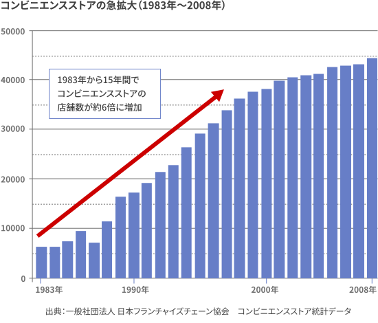
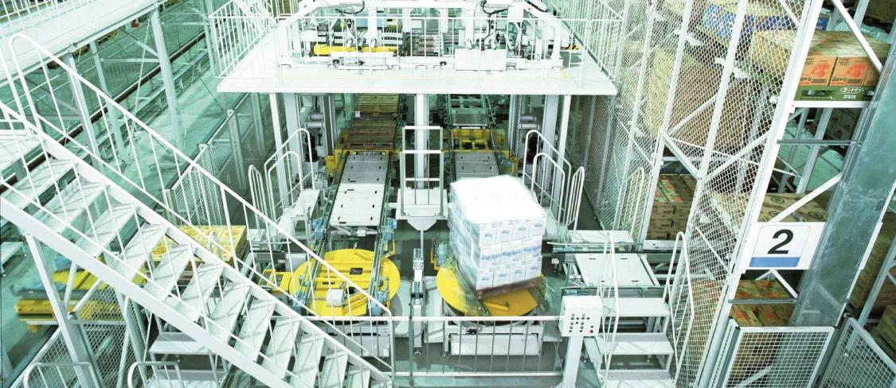
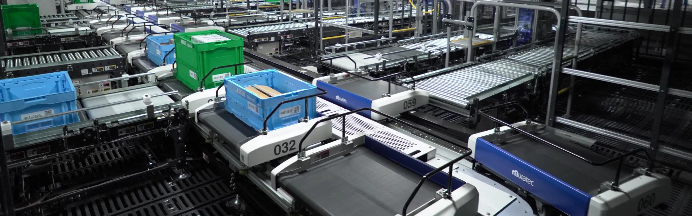
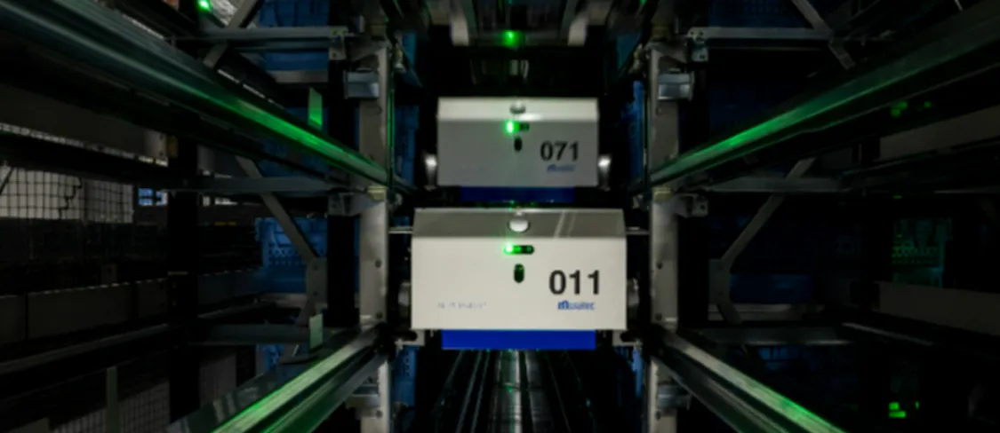

革新の分岐点 Story vol.2
コンビニやネットで、欲しいものがいつでも買えて、
欲しいときに手元に届く時代。
その便利さの裏には、時代の変化と向き合いながら
進化を続けてきた物流システムの姿があります。
コンビニの登場が変えた、
物流のかたち
1980年代、日本全国にコンビニが広がり始めた頃、物流の現場にも大きな変化が訪れていました。品揃えが豊富で、いつでも買い物ができるコンビニの利便性は、必要な商品を、必要な時に、必要な数だけ出荷できる物流システムがなければ成り立ちません。

つまり、店舗ごとに異なるサイズや種類の商品を少量ずつまとめ、最適な配送ルートと荷降ろしの順序を考慮してトラックに積み込む。そんな高度な対応力が物流に求められるようになったのです。特に多品種・少量の組み合わせを必要としたのが、コンビニには欠かせないペットボトル飲料。1982年の食品衛生法改正によってペットボトル入り清涼飲料が許可されたことで、飲料メーカー各社が缶からペットボトルへ大きくシフトし、嗜好の広がりに合わせて多品種・少量の商品を納入先別に仕分ける必要が出てきました。

飲料工場内の自動化システム
命を守るという責任と向き合って
自動化システムで幅広い業界の物流変化に対応し、数多くの実績を重ねていく中、特に情報システムの進化につながったのが、医薬品業界の工場、物流センターの自動化でした。医薬品の品質は、命に直結する重要なもの。製造工程はもちろん、保管や流通においても、徹底した品質管理が求められます。
医薬品の保管・搬送には、保管場所の温度管理から商品の有効期限や出荷時期といった全情報の厳格なマネジメントが必要です。医薬業界での厳格な要件に応える中で、正確かつ安全に情報を管理する高度なシステム構築力が培われていきました。
こうして得た知見と経験は、さらに多品種・少量出荷が求められる様々な業界の物流センターにも活かされました。複雑化する物流の現場でも、ムラテックがトップランナーとして走り続けられたのは、この高度なシステム構築力があったからに他なりません。
「一人ひとりに届ける」
の需要に応えよ
2010年頃からEC市場が急成長したことに伴って、物流現場は再び大きな変化を余儀なくされます。個人向けの宅配が急増したことで、小口かつ高頻度の配送が当たり前になったのです。これまで以上に少量の商品を大量に保管し、複数の配達先へ効率よく届けるための新たなシステムが必要になりました。
そこでムラテックは、保管ラック内をシャトル台車が高速走行して荷物を入出庫する「ユニシャトルHP」や、オーダー商品を揃えるために高速で仕分け搬送する「シャトライナー」などを開発。これらを核とした物流センターを構築することで、よりスピーディーかつ柔軟な出荷体制を実現しました。
時代や業界の変化に対応し、多様なシステムを開発してきたムラテック。工場の自動化も物流センターの構築も、それぞれの企業の経営戦略に直結するプロジェクトのため、要望や課題を丁寧に聞き、企業ごとにカスタマイズしたシステムを開発してきました。時間がかかったとしてもその姿勢こそが、「お客さまや消費者に高い価値を届けられるモノづくりだ」という信念があったからです。

働き手不足の時代に、
人にやさしい物流を
物流が直面している課題は、増え続ける保管・出荷量だけではありません。労働生産人口の減少により、現場を支える人材の確保が難しくなり、輸送能力の低下や物流全体の停滞が懸念されています。こうした「物流クライシス」を乗り越えるには、物流センターのさらなる自動化と、ロボットによる省人化の推進が不可欠です。なかでも、人がピッキングしなくても荷物が自動で集まってくる「G2P（Goods to Person）」の考え方が、持続可能な物流の鍵を握っています。
ムラテックは、ユニシャトルHPとシャトライナー、あるいは自動倉庫とAGV（無人搬送車）の組み合わせなどで、さまざまなG2Pを実現してきました。さらに、保管・搬送・仕分け・ピッキングのすべてに対応できるロボットが何十台も連携する「新G2Pロボット倉庫」の開発や、物流センターの完全自動化を見据えた開発も進めています。また、物流センターで出荷する荷物の積み込み順や荷揃えのタイミングを、トラックの到着時間や配達順序を考慮して自動で調整するなど、サプライチェーン全体のムダ・ムリ・ムラを解消するために、すべての機器とシステムをつなぐソフトウェアプラットフォームの構築にも取り組んでいます。

この先、どれほど大きな変化が待ち受けているかは誰にもわかりません。しかし、これまで対応してきたすべての変化が、ムラテックにとって「革新の分岐点」となったように、どんな変化も乗り越えていきながら、ロジスティクスの進化を支え続けていくことが私たちの使命だと考えています。

あらゆる変化を
進化に変えていく
ムラテックのL&A事業